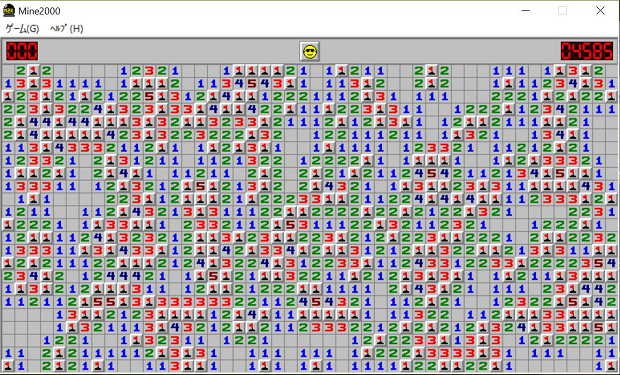

Research theme
文章の自動分類と製造業のデータ分析
ある文章に対して，単語や文節を数値化したものを用いて自動で分類するシステムを構築する．
製造業の企業との共同研究．貰ったデータを用いて定量的に分析し，業務効率化や業務改善を行う．
Hobby
弓道
高専の頃から何故か続いている趣味．あまりに暑いときや，雨天時，冬に雪が降っているとき以外はやってます．最近は練習頻度が下がっているので，今は14kgの弓を引いています．
ルービックキューブ
短時間の時間つぶしや，考えが詰まった時の気分転換に最適．研究室で椅子に座って頻繁にｶｼｶｼ回している人間がいれば，大体私です．
マインスイーパー
一度だけ本物の地雷を探していると勘違いされましたが，ゲームのほうです．Windowsのデフォルトで入っているやつは難易度に関係なくタイムアタックで遊んでいます．難易度を求めるときは，mine2000というもので，超上級かマニアで遊んでいます．死ぬまでにはマニアをクリアしたいと思いながら今日も元気に地雷を踏み抜いています．
